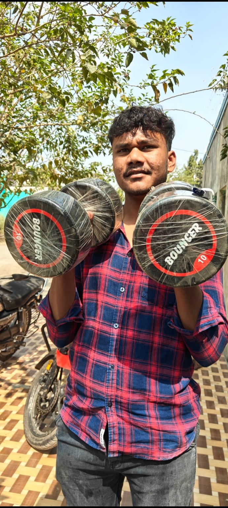

प्रकरण क्रमांक : TG–001 / अत्यंत गोपनीय / फक्त मनोरंजनासाठी
तेजस घुसळे
THE EINSTEIN FILES
एका सामान्य मुलाची असामान्य फाईल. १४ फोटो. असंख्य प्रश्न. आणि प्रत्येक फोटोमागे एक नवा विनोद.
⚠️ ही मित्रांसाठी तयार केलेली विनोदी वेबसाइट आहे. सर्व रिपोर्ट्स, आरोप व निष्कर्ष काल्पनिक आहेत.

STATUS: LEGEND
JUST KIDDING
SECTION 01 / SUBJECT DOSSIER
मुख्य पात्राची गुप्त माहिती
खालील माहिती अधिकृत नाही. मित्रमंडळींच्या कल्पनाशक्तीतून तयार झालेली आहे.
SECTION 02 / DECLASSIFIED EVIDENCE
१४ गुप्त फोटो फाईल्स
प्रत्येक फोटोवर क्लिक करा. पूर्ण फोटो, स्वतंत्र रिपोर्ट आणि गमतीदार निरीक्षण पाहा.
अशी कोणतीही फाईल सापडली नाही.
SECTION 03 / TOTALLY FICTIONAL INVESTIGATION
प्रकरणाची कालरेषा
पहिला फोटो मिळाला
तपास सुरू करण्याआधीच मित्रांच्या ग्रुपमध्ये हशा पिकला.
फोटो वाढत गेले
एका फाईलचे चौदा झाले. तपास अधिकच मजेदार झाला.
गुप्त संग्रह तयार
प्रत्येक फोटोला स्वतःचा कोड, शीर्षक आणि मजेशीर रिपोर्ट मिळाला.
अंतिम निकाल
गुन्हा काहीच नाही. फक्त मित्रांच्या आठवणी आणि धमाल!
FINAL VERDICT / CASE CLOSED
तेजस घुसळे
खरा पुरावा एकच — मित्रांसोबतच्या आठवणी कायम राहतात.
फाईल्स पुन्हा पाहा ↑